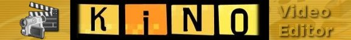
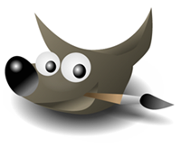

Avoin mediatuotanto
AVOIMEN LÄHDEKOODIN OHJELMISTOT
Tässä luvussa esitellään avoimen lähdekoodin ohjelmia, joita voit käyttää videotuotannossasi. Ohjelmat ovat keskenään yhteensopivia, ja niistä muodostuu avoimen tuotantostudion toimiva työkalupakki.
MITÄ OVAT AVOIMET OHJELMISTOT?
Tietokoneohjelma kirjoitetaan ihmisten ymmärtämällä ohjelmointikielellä (kuten C++), joka käännetään kääntäjän avulla konekielelle. Yleensä (suljetuista) ohjelmista toimitetaan vain tämä konekielinen versio, jolloin käyttäjä ei pääse tutkimaan eikä muuttamaan ohjelmaa. Avoimista ohjelmista taas toimitetaan myös lähdekoodi, jolloin kuka tahansa voi tutkia, käyttää ja muuttaa ohjelmaa. Avoimen lähdekoodin yhteisöissä syntynyttä, hajautettua yhteistyötä sovelletaan nyt sosiaaliseen mediaan ja muuhun avoimeen, osallistuvaan tuotantoon.
Avoimen lähdekoodin ohjelmaa ja sen muokattua versiota saa myös jakaa vapaasti, mikä tarkoittaa että ohjelman lataaminen omaan käyttöön on ilmaista.
AVOIMET VIDEOEDITORIT
Videon tekemiseen tässä oppaassa käytetään avoimen lähdekoodin OpenShot- ja Kino -videoeditoreita.
Useimmat avoimen lähdekoodin videoleikkausohjelmistot ovat vielä toistaiseksi toimivuudeltaan hieman rajoittuneempia kuin suljetut kaupalliset editointiohjelmat, kuten vaikkapa Applen Final Cut tai Adobe Premiere, mutta ovat silti hyviä työkaluja.
Ohjelmistot kehittyvät myös voimakkaasti. Vuoden 2010 lopussa julkaistiin avoimen lähdekoodin beta-versio Hollywoodin ammattilaistuotannoissakin käytetystä Lightworks -editointiohjelmistosta. Tämä ilmainen ammattilaissofta toimii toistaiseksi vain Windows-ympäristössä, Linux-versio on odotettavissa aikaisintaan vuoden 2011 lopussa.
OpenShot
OpenShot Video Editor on videon leikkausohjelma Linuxille. Se on ilmainen avoimen lähdekoodin ohjelma. Editoiminen OpenShotilla on helppoa, kunhan ohjelman pienet rajoitukset tulevat tutuiksi.
Projektin aloitti elokuussa 2008 Jonathan Thomas, jonka päämääränä oli tuottaa vakaa, ilmainen ja helppokäyttöinen videoeditori. Ohjelmaa kehitetään aktiivisesti ja uusia ominaisuuksia julkaistaan jatkuvasti. Maaliskuussa 2010 OpenShot äänestettiin parhaaksi Linux-videoeditoriksi ja se on sisällytetty Linuxin Ubuntu-käyttöjärjestelmän jakeluversioon.
OpenShotin avulla voi leikata videota, lisätä siihen erikoistehosteita ja siirtymiä, sekä eksportoida eli viedä videon monissa eri tiedostomuodoissa, sillä se käyttää videon pakkaamiseen ffmpeg-ohjelmaa.
Ohjelman etu on sen tarjoama mahdollisuus useamman video- ja ääniraidan samanaikaiseen käyttöön. Ohjelma tarjoaa myös laajat kuvan editointimahdollisuudet. OpenShotiin voit tuoda hyvin monenlaisia, vaikkapa kännykällä tai muistikorttikameralla kuvattuja videotiedostoja. OpenShot tukee esimerkiksi seuraavia videotyyppejä: AVCHD, QuickTime, DVD, Xbox 360, Vimeo, Flickr, Picasa, Youtube, Nokia ja Metacafe. Tuetut videoformaatit ovat: Ogg Theora, MPEG-TS, MKV, ipod, vob, mov, mp4 ja mpeg. Jos materiaalisi on dv-kasetilla, joudut käyttämään kaappaamiseen jotain muuta ohjelmaa, esimerkiksi Kinoa.
OpenShotin käytöön ja asennukseen löytyy oma opas FLOSS Manuals -kirjastosta.Uusimmat tiedot Open Shotista löydät projektin verkkosivuilta: http://www.openshotvideo.com/
Kino

Kino on ilmainen avoimen lähdekoodin videoeditori, jonka avulla voi kaapata videota Firewire-johdon avulla tietokoneelle ja lisätä otsikoita, siirtymiä ja videoefektejä kuvamateriaaliin. Se toimii Linuxissa ja sitä ei ole saatavilla Windows tai Mac OS X -käyttöjärjestelmiin.
Kino on vakaa ja käyttöliittymältään melko näppärä, kun siihen hieman perehtyy. Kinossa suurin rajoite on yksiraitaisuus, mikä tarkoittaa että kuva ja ääni eivät ole erotettavissa toisistaan. Päälleäänitys- (eli dub-) toiminnon avulla kuvan ja äänen keskinäinen sommittelu on mahdollista, mutta käytännössä leikkaus Kinolla sujuu jouheasti silloin, kun ääni ja kuva leikkautuvat aina samasta kohtaa tai jos kuvattua materiaalia käytetään ilman ääntä.
Kinon käytöön ja asennukseen löytyy oma opas FLOSS Manuals -kirjastosta. Viimeisimmät tiedot Kinosta löytyvät verkkosivulta: http://www.kinodv.org
OHJELMAT ÄÄNEN JA GRAFIIKAN MUOKKAAMISEEN
Vaativammissa tuotantotehtävissä kuten äänen ja musiikin miksauksessa ja videografiikan työstössä voit käyttää seuraavia ohjelmia. Tarkemmat ohjeet niiden käyttöön löydät FLOSS Manuals -oppaista.
Audacity

Audacity on avoimen lähdekoodin äänieditori. Audacityä voi käyttää äänien editoimiseen, esimerkiksi musiikin ja puheen miksaamiseen tai äänen tasojen säätämiseen. Audacityllä voi myös äänittää puhetta.
Audacity on saatavilla Linux, Mac OS X ja Windows -käyttöjärjestelmiin.
Viimeisimmät tiedot Audacitystä löydät Audacityn verkkosivulta: http://audacity.sourceforge.net/
GIMP

GIMP eli GNU Image Manipulation Program on avoimen lähdekoodin grafiikkaeditori. Sillä voi muokata rasterigrafiikkaa, esimerkiksi valokuvia. GIMP on saatavilla ilmaiseksi moniin käyttöjärjestelmiin. GIMP vastaa käyttötarkoitukseltaan Adobe Photoshopia.
GIMPin voit ladata ilmaiseksi osoitteesta: http://www.gimp.org/
Inkscape
Inkscape on avoimen lähdekoodin vektorigrafiikkaeditori, jonka käyttötarkoitus vastaa suunnilleen Corel Drawia. Inkscape tekee vektorigrafiikkaa XML-muodossa SVG-standardin mukaisesti. Se toimii monissa eri käyttöjärjestelmissä.
Inkscapen voit ladata ilmaiseksi osoitteesta: http://inkscape.org/